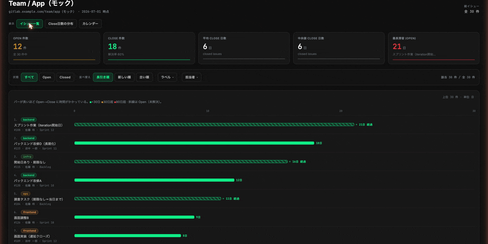
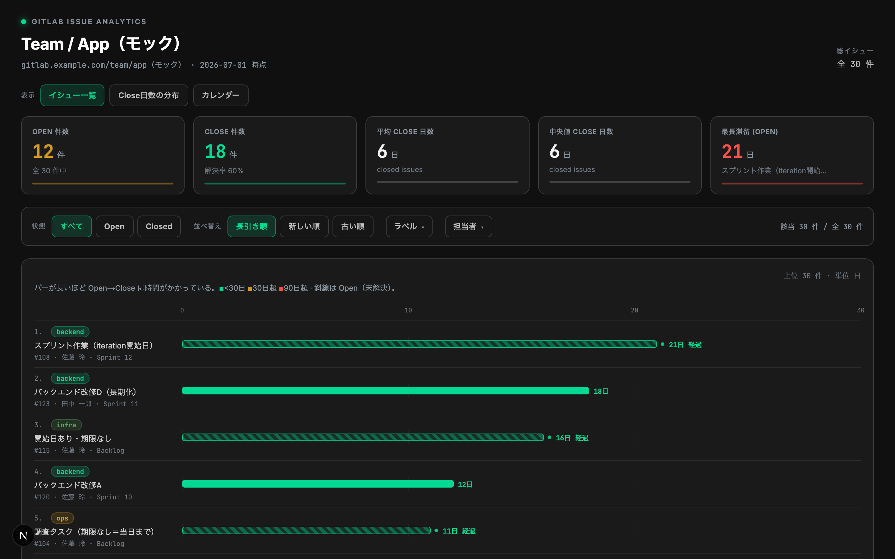
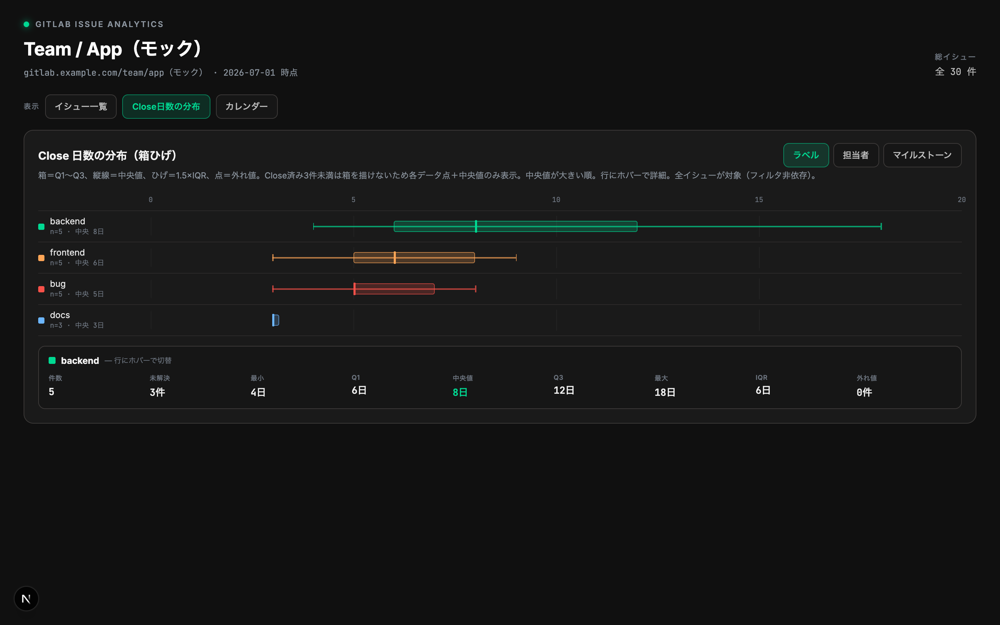
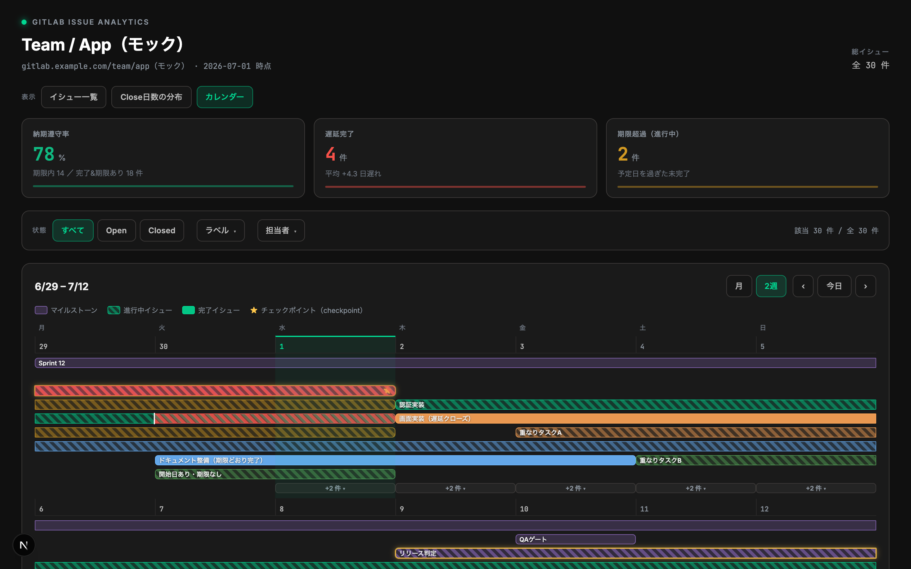
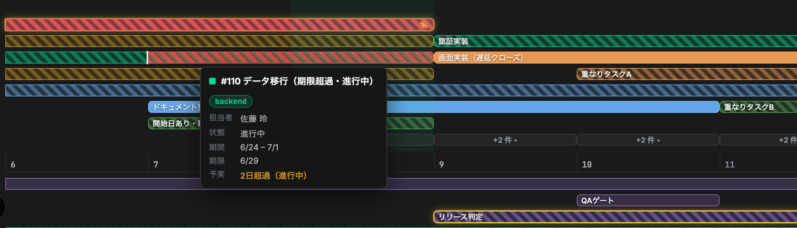
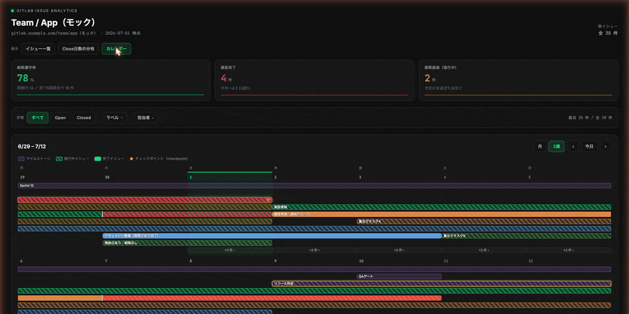
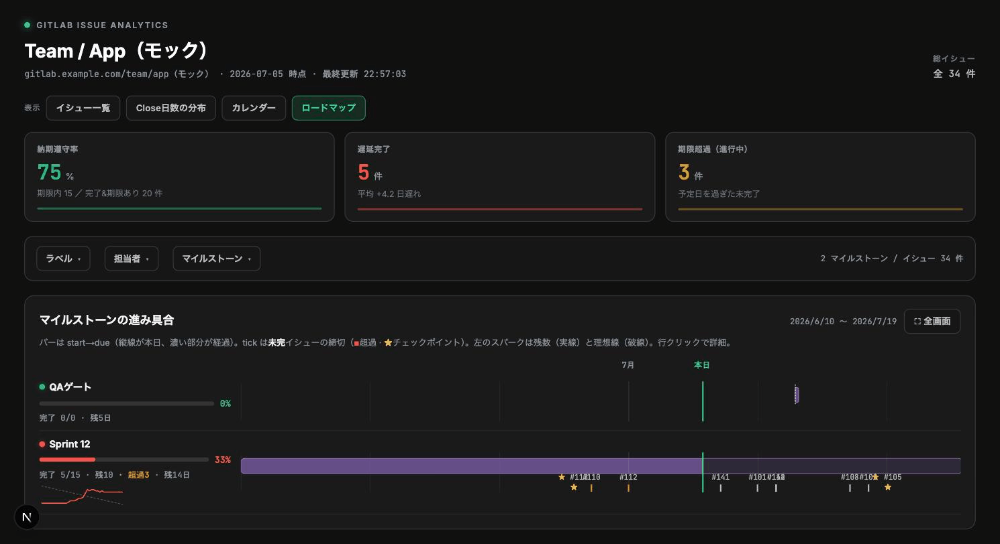
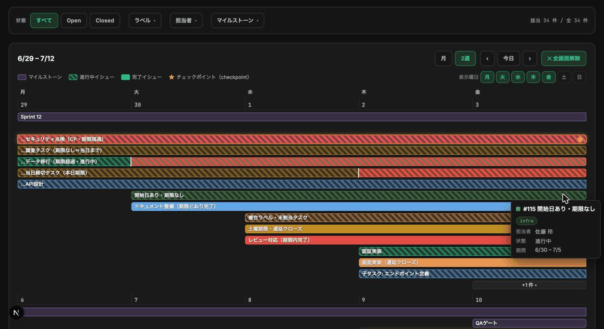

サンプルデータで試す
4つのビューと遅延表示をすぐ確認できます。
npm install
MOCK_GITLAB=1 npm run devField guide / 操作マニュアル
起動から絞り込み、4つのビューの使い分け、会議での見せ方まで。日々よく使う操作を画面付きで説明します。
01 / GET STARTED
動作確認だけなら GitLab の認証情報は不要です。実データで使うときは、先に管理者が接続設定を済ませます。
4つのビューと遅延表示をすぐ確認できます。
npm install
MOCK_GITLAB=1 npm run dev.env.local に接続先、プロジェクト、トークンを設定して起動します。
cp .env.example .env.local
npm run devhttp://localhost:48273 を開きます。データは自動更新されます。 画面は60秒ごとに再取得します。GitLabで変更した直後は、最大約60秒待ってから確認してください。
02 / ORIENTATION
上部の4つのボタンが入口です。迷ったら、知りたいことに合わせて選びます。

どの仕事が長引いているかを確認。日々のトリアージの最初に使います。
何が、誰が時間を使っているかを比較。月次やスプリントの振り返り向けです。
いつからいつまで、どれが遅れているかを確認。直近2週間の調整に向きます。
マイルストーンが期限までに終わりそうかを確認。目標単位の進捗共有に使います。
03 / FILTER
状態・ラベル・担当者・マイルストーンの選択は、イシュー一覧とカレンダーで共通です。選択後の件数は右端の「該当」で確認できます。
| 選び方 | 判定 | 例 |
|---|---|---|
| 同じ項目内で複数選択 | いずれかに一致 | ラベル「bug」「urgent」→どちらかを持つイシュー |
| 項目をまたいで選択 | すべてに一致 | Open ＋ 担当者「田中」→田中さんの未完了イシュー |
| 何も選ばない | その項目では絞らない | 担当者が未選択→全担当者 |
Close日数の分布はフィルタの影響を受けません。 分布ビューでは、右上の「ラベル／担当者／マイルストーン」で集計の切り口を変えます。
04 / TRIAGE
イシュー一覧は、滞留日数を横棒で並べます。斜線のバーはOpen、単色のバーはClosedです。

見る順番のおすすめ：「最長滞留（Open）」→一覧先頭のタイトル→担当者・マイルストーン。長期化の理由や次のアクションはGitLabのイシューで確認します。
05 / RETROSPECTIVE
Close済みイシューの所要日数を、ラベル・担当者・マイルストーン単位で比較します。中央値が大きい順に並びます。

| 表示 | 読み方 |
|---|---|
| 箱 | 中央50%のイシューが収まる範囲（Q1〜Q3） |
| 箱の中の縦線 | 中央値。代表的な所要日数を見るときの基準 |
| ひげ | 一般的なばらつきの範囲 |
| 点 | 外れ値、または件数が少ないグループの各データ |
06 / SCHEDULE
カレンダーは、マイルストーンとイシューを同じ時間軸に並べます。赤い斜線が、予定日を過ぎた期間です。


| 状態 | 画面表示 | 意味 |
|---|---|---|
| 期限内に完了 | 完了イシューの単色バー | 予定日までにClose |
| 遅れて完了 | 予定日以降が赤い斜線 | 予定日からClose日までが超過 |
| 期限超過・進行中 | 予定日以降、今日まで赤い斜線 | まだOpenで予定日を超過 |
| 期限なし・進行中 | 赤い斜線なし | 予実差分は判定できない |

07 / MILESTONE
ロードマップは1マイルストーンを1行で表示します。左側で完了率と残数、右側で期間と未完了イシューの期限を見ます。

日程が表示されない場合： GitLabのマイルストーンに開始日または期限を設定してください。日付がないマイルストーンは、時間軸上のバーを描けません。
08 / PRESENT
カレンダーとロードマップには全画面モードがあります。ヘッダーやほかの指標を隠し、フィルタと現在のビューだけを画面いっぱいに表示します。

Esc の解除順： ポップアップ → 選択中の強調 → 展開中の行 → 全画面。重なっている場合は必要な回数だけ押してください。
09 / DATA HYGIENE
ダッシュボードの見え方は、GitLabのイシューとマイルストーンの入力内容で決まります。表示がおかしいときは、まず元データを確認します。
| GitLabで設定する項目 | ダッシュボードでの使われ方 | 運用の目安 |
|---|---|---|
| イシューのタイトル | 一覧、カレンダー、ロードマップの表示名 | 作業内容が一目で分かる短い名称 |
| 担当者 | 担当者フィルタ、分布、詳細表示 | 着手前に割り当てる |
| ラベル | ラベルフィルタ、分布、代表ラベル、チェックポイント | チーム内の分類を揃える |
| 期限（due date） | 予定線、遅延判定、未完了tick | 遅れを見たい作業には必ず設定 |
| マイルストーン | フィルタ、所属関係、ロードマップ | 目標単位で紐づける |
| マイルストーンの開始日・期限 | カレンダー／ロードマップの期間バー | 両方を設定すると最も読みやすい |
| イシューのClose | 完了日、Close日数、納期遵守率 | 完了した日にCloseする |
絞り込みとチェックポイント判定は全ラベルを見ます。一覧のラベルチップと「ラベル別」分布では、GitLabが返す配列の先頭ラベルを代表として表示します。
カレンダーでは、イシューの開始日に created_at を使います。終了は、完了済みなら closed_at、未完了で期限があれば due_date、期限もなければ今日です。
既定では checkpoint ラベルを付けたイシューが★になります。ラベル名を変える場合は、起動環境の CHECKPOINT_LABEL を変更します。
10 / TROUBLESHOOTING
よくある症状から、最初に確認する場所をまとめています。
.env.local の GITLAB_BASE_URL、GITLAB_PROJECT_ID、GITLAB_TOKEN を確認します。read_api スコープがあるか確認します。自動更新とサーバーキャッシュはともに60秒です。1分ほど待ち、ブラウザのタブを一度切り替えて戻るか、ページを再読み込みします。
状態、ラベル、担当者、マイルストーンの選択数を確認し、それぞれのポップアップから「選択をクリア」します。カレンダーでは表示期間と非表示曜日も確認してください。
遅延判定にはイシューの期限が必要です。GitLabで due date を設定してください。期限のない未完了イシューは、今日までのバーは表示されますが遅延とは判定されません。
マイルストーンフィルタを解除し、GitLab側で開始日・期限を設定します。イシューが0件でも取得済みマイルストーンは選択できますが、日程がなければ時間軸バーは描けません。
環境変数の全一覧、Docker、アーキテクチャ、テスト方法は README を参照してください。